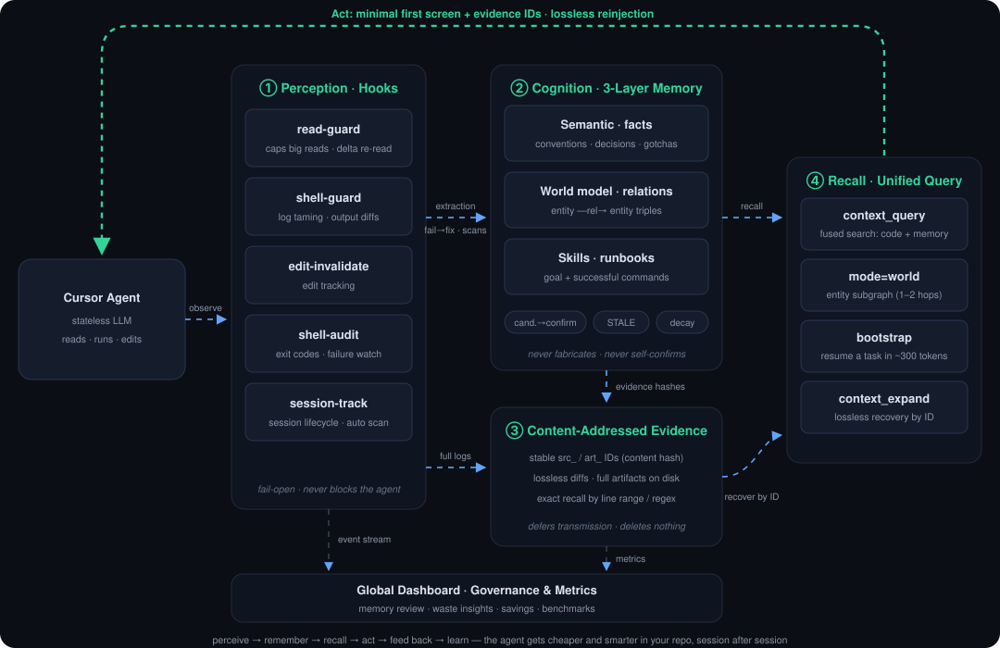

LLMs are stateless: every request re-transmits the whole context, and everything resets when the session ends — that burns money, and the agent never learns your project. We add a cognitive layer: a content-addressed evidence store squeezes transmission to the minimum, while verifiable memory, a world model and skill runbooks make it understand you better with every session.
Savings vary by project — after installing, run cursor-token-saver bench to measure on your own codebase.
Built on Cursor's official hooks and MCP interfaces — waste is intercepted at the tool-call layer, no model changes, no code changes.
Oversized file reads, repeated command output, re-reads of unchanged files — replaced with outlines, diffs or a one-line "unchanged" marker before they ever enter the context.
Every truncation leaves a stable evidence ID. When the agent truly needs the original, one call recovers any line range exactly — what's saved is waste, not information.
Conventions, decisions, hard-won gotchas and deploy flows settle into verifiable memory; a warm-start pack restores full task state in a few hundred tokens.
Four layers, one loop: perceive → remember → recall → act → feed back → learn. The green line is the lossless reinjection path — the model receives only a minimal first screen plus evidence IDs.

Not a bag of prompt tricks — a cognitive architecture: perceive → remember → recall → act → feed back → learn.
Everything truncated, compacted or diffed is persisted by content hash with a stable evidence ID. The model gets a minimal first screen; any line range recovers exactly by ID — what's eliminated is "transmit everything by default", not information.
Engineering facts (conventions/decisions/gotchas/entry points) carry content hashes of their linked files: a change flags them STALE automatically; mechanical extraction only creates candidates until confirmed. Memory that trusts itself blindly becomes a liability — verifiability is its lifeline.
Entity —relation→ entity triples extracted automatically from package.json / docker-compose / nginx / CI: domain → port → service → script. Entity subgraph queries in 1–2 hops; one triple line replaces hundreds of config lines.
When a task wraps up, a runbook (goal + successful command sequence) is extracted from the command timeline; recurring flows gain confidence. The way human skill memory works is the way agent skill memory should work.
The same command flips from failing to passing with file edits in between — the system automatically records "command X failed, passed after editing A and B". Pitfalls become experience; you never step in the same hole twice.
Hooks observe reads and commands (perceive) → distill verifiable memory (learn) → search fuses code and memory (recall) → the warm-start pack continues the task (persist). The agent gets cheaper and smarter in your repo.
Every one of them obeys the same iron rule: fail-open — a tool fault never blocks the agent from working.
Incremental re-reads send line-level diffs only; repeated commands send just the delta from last time; data files get structural profiles. All recoverable.
Exact match + BM25 + local neural vectors fused three ways; low confidence widens candidates automatically; previews first, expansion on demand.
Engineering facts stored with file hashes: changed files flag them stale automatically; mechanical extraction only creates candidates until confirmed — hallucinations don't accumulate.
Domain → port → service relation graphs extracted automatically from package.json / docker-compose / nginx / CI; one triple line replaces hundreds of config lines.
Successful command sequences extracted automatically when tasks wrap up; fail→fix journeys recorded as gotchas — reused directly in the next session.
One view across projects: savings converted to money, waste insights, memory review, retrieval-quality evaluation, one-shot startup.
Unlike cloud memory products, the index, embeddings, memory and stats all live locally. Neural embeddings run on local ONNX inference — no telemetry, no phoning home, and license checks are offline signatures too. For compliance-sensitive teams this isn't a feature; it's the precondition.
The free tier is fully functional — not a trial. Paying buys team collaboration and cross-device capabilities.
No — that's the first constraint of the whole design. Every compression is lossless: truncations leave evidence IDs, and one call recovers any range of the original exactly. Retrieval fuses three paths with automatic fallbacks, and LSP degrades to the import graph when unavailable. The rules explicitly steer the agent to "expand when unsure" instead of guessing.
We don't publish one universal number, because savings depend on your project and your mix of operations. After installing, run cursor-token-saver bench: it replays six typical operations on your real codebase and produces a comparison report with a full methodology statement — it measures transport-layer tokens and promises no billing reduction.
Everything mechanically extracted is a "candidate" that only takes effect after the agent or you confirm it; file-linked memories store content hashes and are flagged stale automatically when files change; long-unused entries are archived. Every entry is viewable, editable and deletable on the dashboard.
All files live under the project's .cursor/ directory and ~/.cursor-token-saver/ — delete them and it's fully gone, without touching your code or git history.
All hooks are fail-open: any exception lets the original operation through. The worst case is falling back to the pre-install state — it will never block your work.